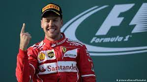
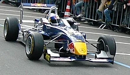

Fetel je započeo svoju karijeru u Formuli 1 kao test vozač za BMV Sauber 2006. godine, a nastupio je jednokratno u trkama 2007. Deo programa mladih vozača Red Bulla, Fetel je nastupio za Toro Roso kasnije te godine i ostao je kao pun -vremenski vozač za 2008. Fetel je promovisan u Red Bul 2009. Sa Red Bulom, Fetel je osvojio četiri uzastopne titule od 2010. do 2013. godine, od kojih ga je prva učinila najmlađim svetskim šampionom u sportu, postavljajući rekorde za najviše uzastopnih pobeda u trkama (9) i pobede u trci u jednoj sezoni (13). Fetel je potpisao za Ferari za 2015. i postao je najbliži izazivač Mercedesa i Luisa Hamiltona u dve borbe za titulu 2017. i 2018. godine, iako je obe godine završio kao vicešampion.
Fetel je rođen 3. jula 1987. u Hepenhajmu, Zapadna Nemačka, od porodice Norberta i Hajke Fetel. Ima jednog mlađeg brata, Fabijana, trkača, i dve starije sestre: Melani, zubnog tehničara i Stefani, fizioterapeuta za decu sa invaliditetom. Fetel je u jednom intervjuu nagovestio da je bio „užasan“ u školi, ali je položio Abitur u Hepenhajmovoj Gimnaziji Starkenburg [de] sa respektabilnom ocenom. Njegovi junaci iz detinjstva bili su „Tri Majkla“: Mihael Šumaher, Majkl Džordan i Majkl Džekson. Napomenuo je da je želeo da bude pevač kao Džekson, ali je shvatio da nema glas. Fetel je takođe obožavatelj Bitlsa, sakupio je nekoliko ploča, uključujući Abbei Road i njegovu omiljenu pesmu „Drive Mi Car“. U intervjuu za Top Gear je izjavio da je obožavatelj britanske komedije poput Male Britanije i Brajanov život Montija Pajtona. Fetel živi u Turgoviji, u Švajcarskoj, među ostalim vozačima i navija za nemački fudbalski tim Ajntraht iz Frankfurta. Fetel je sebe opisao kao takmičarskog, privatnog i nestrpljivog. Takođe se pojavljivao u reklamama za Head & Shoulders i dao glas lika Sebastijana Šnela u nemačkoj verziji filma Cars 2.
Fetel se oženio prijateljicom iz detinjstva Hanom Prater na privatnoj ceremoniji početkom 2019. godine i imaju troje dece. Forbs je 2016. godine procenio da je njegov godišnji prihod bio 41 milion dolara. Kimi Raikonen, njegov saigrač od 2015. do 2018., blizak je prijatelj. Pored maternjeg nemačkog, Fetel govori engleski, francuski, finski i italijanski. Fetel je takođe poznat po tome što izbegava društvene mreže, i jedini je vozač Formule 1 na mreži 2022. bez prisustva društvenih medija.
Fetel je počeo da se bavi kartingom sa tri godine, a počeo je da se takmiči u karting serijama 1995. sa osam godina. Primljen je u Red Bull juniorski tim 1998. godine i osvojio je razne titule, kao što je Junior Monaco Kart Cup 2001. Fetel je promovisan u automobile sa otvorenim točkovima 2003., a Derrick Valker mu je dao šansu da testira Reinarda Motorsport šampionski automobil na dvodnevnom privatnom testu na stazi Homestead. Godinu dana kasnije, osvojio je šampionat Formule BMV ADAC 2004. sa 18 pobeda u 20 trka.
Fetel je vozio za ASL Mucke Motorsport u Formuli 3 Euro Serije 2005. Bio je peti na konačnom plasmanu sa 63 boda i osvojio Kup početnika. Kasnije te godine testirao se za tim Formule jedan Vilijams kao nagradu za uspeh u Formuli BMV. Fetel je zatim otišao na testiranje za BMV Sauber tim Formule 1.
Fetel je promovisan u test vozača za BMV Zauber 2006. godine, a učestvovao je u Formuli 3 Euro Serije 2006. i završio kao drugoplasirani. Takođe se takmičio u Formuli Reno 3.5 serije 2006, gde je završio prvi i drugi u Mizanu u svoje prve dve trke. U sledećoj rundi na Spa-Frankoršampu, njegov prst je skoro odsečen od letećih krhotina nakon nesreće, a očekivalo se da će biti van terena nekoliko nedelja. Ipak, uspeo je da se takmiči na Mastersu Formule 3 2006. u Zandvortu sledećeg vikenda, gde je završio na šestom mestu. Fetel se takmičio u Formuli Reno 2007. serije 3.5 i odneo svoju prvu pobedu na Nirburgringu. Vodio je šampionat kada ga je za stalno pozvao BMV Zauber tim Formule 1.
Ako želite da saznate još pođite na: Link za njegovu Vikipedija Stranicu!